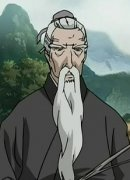
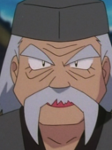
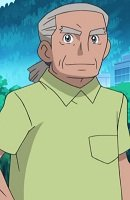
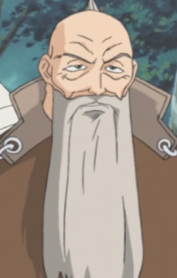

|  |
Enho |
|
Enho is a wise old man who lives in the city of Hokui in the province of Ei. He knows a lot about the Kingdom of Kei and gives lessons on the Twelve Kingdom. He takes care of citizens during the beginning of Youko regin. |
|  |
Kenzo |
|
Kenzo is the owner of his own dojo. He wants his daughter to take over the dojo if she can change her battle style. |
|  |
Miles |
|
Miles is Skyla's grandfather and the former Gym Leader of the Mistralton City. He is very knowledgeable about important female figures in Unova because he finds them attractive. |
 |
Rei's Grandfather |
- Sailor Moon
- Sailor Moon R
- Sailor Moon S
- Sailor Moon Super S
- Sailor Moon Memorial
|
Rei's Grandfather is a priset at Hikawa Shrine. He is lively, lecherous and very stubborn grandfather. He is very skilled at martial arts. |
 |
Richard Mardukas |
- Full Metal Panic!
- Full Metal Panic? Fumoffu
- Full Metal Panic! The Second Raid
- Full Metal Panic! The Second Raid OVA
- Full Metal Panic! The Invisible Victory
|
Richard Mardukas is second only to Testarossa. He is British and served on many submarines before joining Mithril. He is generally a dry, straight-laced, and conservative man. He displays great loyalty and dedication toward the captain. |
|  |
Shiba |
|
Shiba is the first rave master. He is a cheerful man who has a heavy responsibility. Shiba can cry anywhere at any time. He has light-hearted personality. Tomomichi Nishimura voiced young Shiba. |